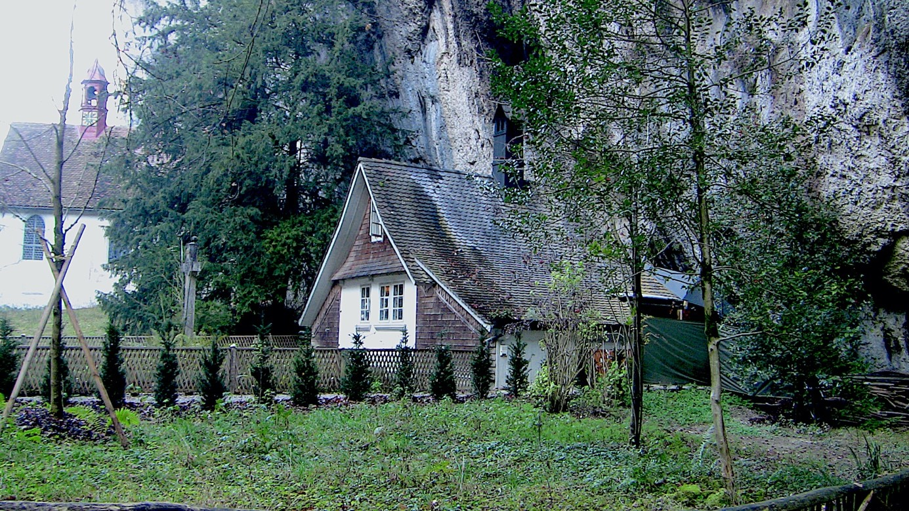

Bei einem Besuch der schönen Barockstadt Solothurn lohnt sich ein Abstecher in die Einsiedelei. Nördlich von Solothurn, unmittelbar bei der Kirche St. Niklaus in Feldbrunnen, beginnt die Verenaschlucht. Ein schöner Spaziergang führt durch die malerische Schlucht zur Einsiedelei. Dieser Weg ist bei Nacht während der Adventszeit besonders besinnlich. Denn die Schlucht ist dann von unzähligen Kerzen wunderschön beleuchtet. Jeder Spaziergänger ist eingeladen, seine eigenen Kerzen am Wegesrand zu entzünden.
Am nördlichen Ende der Schlucht liegt die Einsiedelei St. Verena. Mehrere Gebäude eröffnen sich dem Auge des Besuchers: zwei Kapellen und eine Klause. Letztere wird auch heute noch von einem Einsiedler bewohnt, der Ratsuchenden seelsorgerlich zur Seite steht.
Verenaschlucht, im Vordergrund die Klause, im Hintergrund die St. Martinskapelle (Bild: Raphael Hadorn)
Ein tugendhaftes Leben
Doch wie ist es dazu gekommen, dass an diesem unwirtlichen Ort ein Wallfahrtsort entstanden ist? Die Gründe dafür liegen weit zurück, im dritten Jahrhundert nach Christus. Damals soll die heilige Verena eine bestimmte Zeit lang hier gelebt und gewirkt haben. Die ältesten Aufzeichnungen über diese Legende stammen aus dem achten Jahrhundert. Es handelt sich dabei um die Vita Prior. Diese Schrift beschreibt das Leben der Heiligen Verena. Der Leser, respektive besonders die Leserin, soll durch den Lebenswandel der Heiligen im tugendhaften Leben ermutigt werden. Vieles aus dieser Schrift ist historisch nicht gesichert oder sogar klar von der Hand zu weisen. So soll Verena in Solothurn die Alemannen missioniert haben. Dabei lebten die Alemannen im dritten Jahrhundert noch gar nicht in dieser Gegend. Ungeachtet ihrer Historizität haben die Vita Prior und ihr Nachfolgewerk die Vita Posterior grossen Einfluss genommen und die Verenaschlucht bis heute sichtbar geprägt.
Von Ägypten über Solothurn und Zurzach
Den Viten zufolge stammte Verena aus einer angesehenen Familie in Oberägypten. Zusammen mit der thebäischen Legion kam sie nach Mailand und blieb dort einige Jahre. Nachdem viele Soldaten aus der thebäischen Legion in Agaunum (heutiges Saint-Maurice im Wallis) das Martyrium erlitten haben, begab sich Verena ebenfalls dahin. Sie trauerte um die Soldaten und zog weiter bis zum Kastell Solodurum, dem heutigen Solothurn. In dieser Stadt sollen die thebäischen Legionäre Urs und Viktor das Martyrium erlitten haben. Deswegen mied Verena den Ort und zog sich in eine Höhle nördlich von Solothurn zurück. Sie lebte dort als Einsiedlerin und verbrachte ihre Tage mit Beten, Fasten und Psalmengesang. Zudem vertiefte sie sich in Cyprians Buch über die Lehre der Jungfrauen. Ihre Handarbeiten verkaufte sie an die lokale Bevölkerung, um sich das Nötigste an Nahrung zu verschaffen. Besessene und Blinde wurden zu ihr gebracht, damit sie ihnen die Hände auflegte. Viele sollen so Heilung erfahren haben. Wegen dieser Wunderzeichen, so berichtet es die Legende, bekehrten sich die Alemannen und liessen sich von einem Priester aus Italien taufen. Viele Frauen scharten sich um Verena, um von ihr in der Lebensführung einer geheiligten Jungfrau unterrichtet zu werden.
Verenas Berühmtheit machte den «Tyrannen von Solothurn» auf sie aufmerksam. Er liess sie verhaften und mehrere Tage einkerkern. In der Zelle soll ihr der Heilige Mauritius begegnet sein, um sie auf ihrem Weg zu ermutigen. Während derselben Nacht sei der Tyrann von starkem Fieber befallen worden. Daraufhin liess er die Jungfrau zu sich rufen. Verena betete für ihren Peiniger und heilte ihn von seinem Fieber. Daraufhin liess er sie in ihre Höhle zurückkehren, wo sie mit anderen Jungfrauen lebte. Die Vita Prior berichtet von einem weiteren Wunder, welches sich in dieser Höhle zugetragen haben soll: Als einmal das Mehl ausgegangen war, beteten die Frauen um Hilfe zu Gott. Daraufhin fanden sich vor ihrer Höhle vierzig Säcke feinstes Mehl. Mehrere Jahre lang soll dieses Mehl ausgereicht haben, da es sich auf wunderbare Weise vermehrte. So ereignete sich also in Solothurn ein Brotvermehrungswunder, wie es auch von Christus berichtet wird (Mk 6 par). Nachdem Verena einige Jahre in Solothurn gelebt und gewirkt hatte, zog sie weiter nach Zurzach. Auch dort geschahen Wunder durch ihre Hand, ehe sie verstarb und in der Stadt begraben wurde.
Ein Überblick der beiden Biographien zeigt auf, wie wichtig das Motiv der Wanderschaft im Leben von Verena ist. Solothurn ist nur eine ihrer zahlreichen Stationen, die sie von Oberägypten bis nach Zurzach führen. Die Wundererzählungen, der feindliche Tyrann, ihre edle Abstammung und die Entsagung weltlicher Reichtümer sind weitere, typische Elemente einer Heiligenerzählung. Es ist daher wenig verwunderlich, dass Verena schon sehr früh verehrt wurde. Zahlreiche Heiligenkalender enthalten ihren Namen. Ihr Gedenktag ist der erste September. Ihr Grab und die Stationen ihrer Wanderung wurden bereits im frühen Mittelalter zu Wallfahrtsorten. Eine weitere frühe Rezeption erlebte Verena im zwölften Jahrhundert bei der Entdeckung der Gebeine der Elftausend Jungfrauen in Köln. Eine dort, aufgefundene, gefälschte Grabinschrift notiert «Sancta Verena virgo et martir». Dazu diente mit grosser Wahrscheinlichkeit die Heilige Verena als Vorbild.
Verenaschlucht, die Verenakapelle in der Felswand (Bild: Raphael Hadorn)
Ein Ort der Ruhe und Stille
In Solothurn selbst lassen sich die Verehrung und die Wallfahrt eher spät nachweisen. Erst aus dem 15. Jahrhundert stammen die ersten Belege eines Einsiedlers, der in der Höhle der heiligen Verena lebte und so ihrer gedachte. Im 17. Jahrhundert wurde ein Kreuzweg eingerichtet, welcher bei der Höhle in der Verenaschlucht endete. Zu Beginn des 19. Jahrhunderts wurde die Gesellschaft der Einsiedelei St. Verena gegründet. Diese hatte das Ziel, die Gebäude in der Schlucht zu erhalten. Bereits nach drei Jahren wurde die Gesellschaft wieder aufgelöst und erst 180 Jahre später erneut gegründet. Durch den Unterhalt der Gebäude und der Berufung des/der Einsiedlers/in machte die Gesellschaft die Einsiedelei zu einem bekannten Ort der Ruhe und Besinnung. Der restaurierte Kreuzweg lädt dazu ein, über das Leiden Christi oder allgemein über die Vergänglichkeit des menschlichen Lebens nachzudenken.
Die aktuelle Verena-Rezeption fokussiert auf Verenas Leben als zurückgezogene Eremitin. Darum soll die Verenaschlucht ein Ort der Ruhe und Stille sein. Meditation und Gebet sollen an diesem Ort im Vordergrund stehen.
Raphael Hadorn ist Theologiestudent an der Universität Bern
Zur Vertiefung:
- Adolf Reinle: Die Heilige Verena von Zurzach. Legende, Kult, Denkmäler, Basel: 1948.
- Daniel Schneller und Benno Schubiger: Denkmäler in Solothurn und in der Verenaschlucht, ein Führer zu den Denkmälern und Gedenktafeln in Solothurn und Umgebung, hrsg. vom Bau-Departement des Kantons Solothurn – Kantonale Denkmalpflege, Solothurn: 1989.
- Paul L. Feser: Führer durch die Einsiedelei St. Verena und die Kirche zu Kreuzen bei Solothurn, Solothurn: 2000.
- Armin Schneider: Zeitgeschichtliche Spuren in der Verenaschlucht, der Landschaftsgarten in der Verenaschlucht, ein monumentales Gedächtnis des 19. Jahrhunderts. Solothurn: 2005.
- Edward Attenhofer: Das Büchlein von der heiligen Verena, Solothurn: 2005.